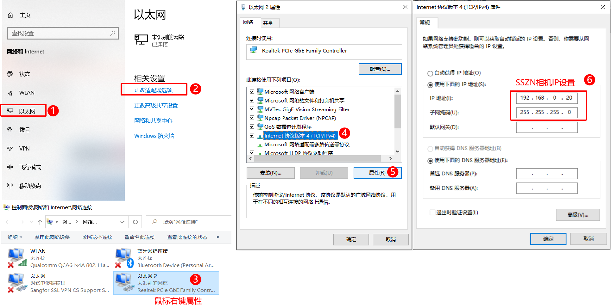
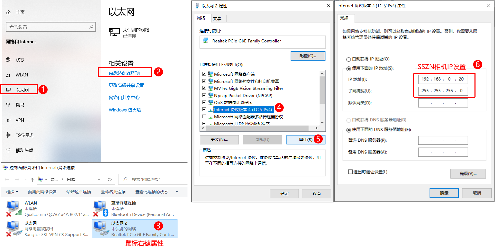
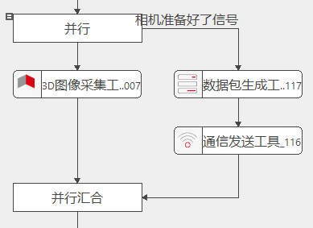
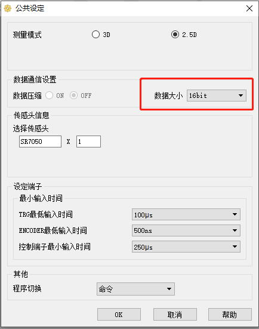

检查相机电源连接是否正常（观察LED指示灯）
安装对应的相机驱动软件
关闭windows防火墙

检查本地IP与相机IP是否在同一网段，多个相机连接时建议一个相机对应一个IP段（192.168.XXX.XXX）

确认相机是否已被驱动软件控制占用，部分相机在相机驱动软件打开的情况下，无法再用VA软件连接控制
现象描述：
VA软件无法连接相机设备；
排查方向：
检查相机电源连接是否正常（观察LED指示灯）
安装对应的相机驱动软件
关闭windows防火墙
检查本地IP与相机IP是否在同一网段，多个相机连接时建议一个相机对应一个IP段（192.168.XXX.XXX）

确认相机是否已被驱动软件控制占用，部分相机在相机驱动软件打开的情况下，无法再用VA软件连接控制
现象描述：
在VA软件3D相机控制界面中可以看到正常图像，但是PLC发出信号后相机没有采集图像。
排查方向：
IO触发接线是否松动、断裂等
排查相机的触发时序，确保采集工具运行后，PLC再给IO触发，

针对采集时序问题，给出以下两种解决方法： a) CT允许的情况下可让PLC端在IO信号输出前添加延时； b) 添加相机与PLC触发时许通讯即可解决该问题，如下图；

a) 更换为光耦端子输出IO信号以解决信号干扰问题
b) 部分相机(如sszn)支持电平模式触发，可将边沿模式触发更改为电平模式触发
现象1：
3D采集工具卡顿、停滞，无图像输出
排查方向：
排查编码器接线是否正确，接线是否有松动、断裂等异常情况，下图为sszn相机编码器触发接线图

确认分频大小是否合适，编码器触发频率不能大于相机设定的扫描频率
增加轴扫描的行程，确保扫描行程内给出了足够的编码器信号
现象2：
3D采集工具提前结束，且输出图像异常
排查方向：
现象描述：
3D采集工具执行时间较长，与设定的频率不符
排查方向：

5.若还未排查到问题，查看采集日志导出，进一步分析根因。日志存放路径：…\LusterCache\3DCameraLog\3DCameraLog_20XX-XX-XX.txt
现象描述：
相机经常掉线，出现参数丢失的现象
排查方向：
现象描述：
视图中采集的图像被拉长或者压缩
排查方向：
通常是使用仿射采样后出现，确认相机Y分辨率、图像分辨率是否异常
排查相机供电情况，是否会经常掉线
现象1：
采集工具执行成功，但输出图像全黑
排查方向：
现象2：
采集工具执行成功，但输出视图完全没有图像
排查方向：
确认相机驱动权限是否过期